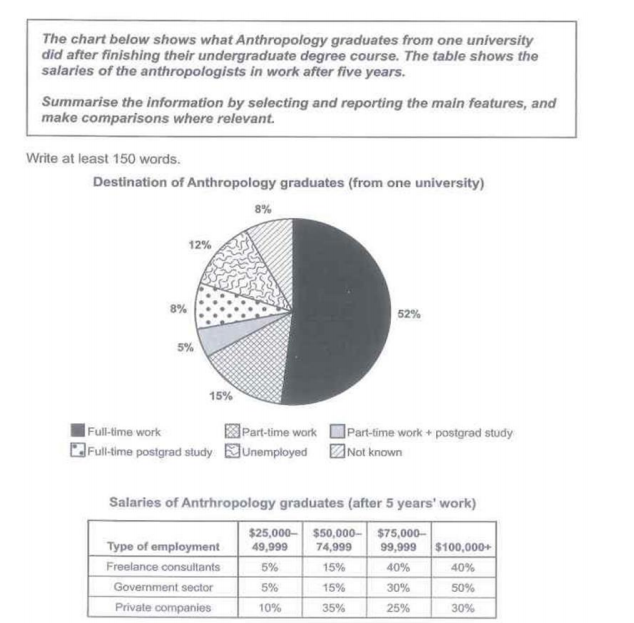

Article
Read the article, then confirm below to continue.
Tower of Babel
Artificial intelligence will make it easier than ever to communicate across linguistic borders — but is this good?
📄 Open articleComprehension & vocab
Questions on the article you just read, plus ten key words from it.
Comprehension
1. According to the article, what has been a long-standing human desire?
2. What does the article suggest is different about the new AI-based solution compared with previous attempts at universal communication?
3. According to the article, why have universal language schemes never fully succeeded?
4. What example does the article give of an existing AI translation tool?
5. What does the article suggest about technologies that erase linguistic diversity?
6. What does the author ultimately argue we need to do as AI translation becomes more common?
Vocabulary
Reading Practice
Open the test in a new tab, complete it, then come back here.
Full Reading Test
"The Purpose of Facial Expressions" and "The History of Chocolate" — 40 questions total. Complete whichever section your teacher assigns.
📖 Open reading passageWriting Task 1: the article
Background reading on graduate career outcomes — study the highlighted language before you write.
■ subject synonyms ■ numerical language ■ useful Task 1 chunks
Graduate Integration and Salary Dynamics in the Applied Social Sciences
The transition from undergraduate humanities and social science degrees to the global labor market presents a multifaceted picture of modern workforce integration. Long-term outcome metrics reveal that higher education in specialized disciplines continues to supply stable employment pipelines while fostering varied earning capabilities across distinct sectors.
Initial destinations post-graduation demonstrate a strong inclination toward immediate workforce entry over prolonged academia. The clear majority of graduates secure direct employment upon completing their degrees, with traditional full-time positions remaining the primary vector of entry. A small yet distinct segment elects to balance professional engagements with further qualifications, undertaking part-time employment concurrently with postgraduate study.
Non-terminal degree paths represent a modest minority of post-graduate outcomes, indicating that immediate application of skills is prioritised over extended research training. Unemployed cohorts and unrecorded outcomes account for a minor fraction of the population, reflecting standard structural transition delays typical of generalist degree programmes.
An evaluation of earnings five years into employment reveals substantial divergence depending on whether professionals align with public institutions, private entities, or independent practice. Government & public policy roles demonstrate the highest concentration of top-tier earners; freelance and strategic consulting features high earning potential at the upper limits, though with greater baseline variability; while private enterprise offers broader accessibility for mid-tier compensation.
Task 1 report
Mini exam block — write your response with the stopwatch running.
The chart below shows what Anthropology graduates from one university did after finishing their undergraduate degree course. The table shows the salaries of the anthropologists in work after five years. Summarise the information by selecting and reporting the main features, and make comparisons where relevant. Write at least 150 words.

Sample answer
Model response, with useful comparison language marked.
The pie chart shows the career outcomes of anthropology graduates from one university, while the table compares their salaries after five years in three sectors.
Overall, full-time employment was the dominant outcome for anthropology graduates, distantly followed by part-time work and unemployment, while the remaining categories accounted for notably smaller proportions. In terms of salaries, those employed in the public sector and as freelance consultants had the highest earnings, with a significant majority earning at least $75,000 per year.
According to the pie chart, just over half of anthropology graduates secured full-time employment, making it the most frequent career path. In contrast, 15% worked part-time, whereas a notable 12% remained unemployed. Additionally, 8% either pursued full-time postgraduate education or had an unknown employment status. A smaller proportion (5%) combined part-time work with further studies.
The table shows considerable variation in earnings across different sectors five years post-graduation. In both the public sector and freelance consulting, a striking 80% of employees earned at least $75,000 annually, with only 5% earning between $25,000 and $49,000. By contrast, graduates in the private sector had a more diverse income distribution, with just over a third (35%) earning between $50,000 and $74,999, and 10% earning less than $50,000.
Speaking Part 2 & 3
Choose a topic set below. Each has a Part 2 cue card and 5 Part 3 follow-up questions. You only get one attempt per question, so make sure you're ready before you start recording.
Video & comprehension
Watch, then answer the questions below.
1. How tall was Julia Lucilla's ivory doll Pompeia?
2. Why is evidence of children playing with sticks and rocks difficult for archaeologists to find?
3. What type of toy has been found in Anatolia dating back to around 3000 BCE?
4. Why can ancient female figurines be difficult to identify as toys?
5. What was probably the most common ancient toy?
6. What was the aim of the ancient Greek game episkuros?
7. Why did Spartan girls participate in rigorous physical activities?
8. According to Plato, why were toys such as building blocks useful?
9. What did young Roman girls sometimes do with their dolls before marriage?
10. Which of the following was an ancient strategic board game mentioned in the video?
Listening
Open the test in a new tab, complete it, then come back here.
Full Listening Test
Sections 1–4, 40 questions total. Complete whichever section your teacher assigns.
🎧 Open listening testDay 6 complete! 🎉
All 9 tasks done. Come back tomorrow for the next day.